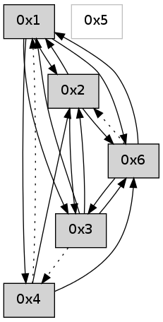

>> << IDX [start] -100 -25 -5 +0 +5 +25 +100 [590.187317133]
 Previous packets
----------------------------------------------------------------------
585.266238 beacon01(adaf) #0 coord=01,02,05,03,04,06 cycle=432.0ms assoc
-- color-indic=0 64 5a 2e
585.276200 beacon02(adaf) #0 coord=01,02,05,03,04,06 cycle=432.0ms assoc 64 0b d1
585.296199 beacon03(adaf) #0 coord=01,02,05,03,04,06 cycle=432.0ms assoc 64 31 df
585.306199 beacon04(adaf) #0 coord=01,02,05,03,04,06 cycle=432.0ms assoc 64 97 f5
585.327642 [Hello(6): seq=300 sym=3,1 sysInfo= stat=3:8,0,0,0/1:8,0,0,0]
585.331504 [Hello(2): seq=880 sym=1,3 sysInfo= stat=1:0,0,0,0/3:2,0,0,0]
----------------------------------------------------------------------
585.758346 beacon01(adaf) #0 coord=01,02,05,03,04,06 cycle=432.0ms assoc
-- color-indic=0 64 16 9e
585.768306 beacon02(adaf) #0 coord=01,02,05,03,04,06 cycle=432.0ms assoc 64 47 61
585.778306 beacon05(adaf) #0 coord=01,02,05,03,04,06 cycle=432.0ms assoc 64 e1 4b
585.788308 beacon03(adaf) #0 coord=01,02,05,03,04,06 cycle=432.0ms assoc 64 7d 6f
585.798307 beacon04(adaf) #0 coord=01,02,05,03,04,06 cycle=432.0ms assoc 64 db 45
585.808307 beacon06(adaf) #0 coord=01,02,05,03,04,06 cycle=432.0ms assoc 64 af 59
585.819110 [Hello(1): seq=285 sym=2,3,6 sysInfo= stat=2:12,0,0,0/3:0,0,0,0/6:0,0,0,0]
585.823634 [Hello(4): seq=386 sym=6,1,2 sysInfo= stat=6:5,0,0,0/1:15,0,0,0/2:11,0,0,0]
----------------------------------------------------------------------
586.250453 beacon01(adaf) #0 coord=01,02,05,03,04,06 cycle=432.0ms assoc
-- color-indic=0 64 d2 f1
586.260415 beacon02(adaf) #0 coord=01,02,05,03,04,06 cycle=432.0ms assoc 64 83 0e
586.270415 beacon05(adaf) #0 coord=01,02,05,03,04,06 cycle=432.0ms assoc 64 25 24
586.280414 beacon03(adaf) #0 coord=01,02,05,03,04,06 cycle=432.0ms assoc 64 b9 00
586.290415 beacon04(adaf) #0 coord=01,02,05,03,04,06 cycle=432.0ms assoc 64 1f 2a
586.300415 beacon06(adaf) #0 coord=01,02,05,03,04,06 cycle=432.0ms assoc 64 6b 36
586.312075 [Hello(2): seq=881 sym=1,3 sysInfo= stat=1:1,0,0,0/3:3,0,0,0]
----------------------------------------------------------------------
586.742561 beacon01(adaf) #0 coord=01,02,05,03,04,06 cycle=432.0ms assoc
-- color-indic=0 64 9f f6
586.752521 beacon02(adaf) #0 coord=01,02,05,03,04,06 cycle=432.0ms assoc 64 ce 09
586.762522 beacon05(adaf) #0 coord=01,02,05,03,04,06 cycle=432.0ms assoc 64 68 23
586.772524 beacon03(adaf) #0 coord=01,02,05,03,04,06 cycle=432.0ms assoc 64 f4 07
586.782522 beacon04(adaf) #0 coord=01,02,05,03,04,06 cycle=432.0ms assoc 64 52 2d
586.792523 beacon06(adaf) #0 coord=01,02,05,03,04,06 cycle=432.0ms assoc 64 26 31
586.803326 [Hello(1): seq=286 sym=2,3,6 sysInfo= stat=2:13,0,0,0/3:1,0,0,0/6:0,0,0,0]
586.807848 [Hello(4): seq=387 sym=6,1,2 sysInfo= stat=6:6,0,0,0/1:15,0,0,0/2:11,0,0,0]
----------------------------------------------------------------------
587.234668 beacon01(adaf) #0 coord=01,02,05,03,04,06 cycle=432.0ms assoc
-- color-indic=0 64 5b 99
587.244628 beacon02(adaf) #0 coord=01,02,05,03,04,06 cycle=432.0ms assoc 64 0a 66
587.254629 beacon05(adaf) #0 coord=01,02,05,03,04,06 cycle=432.0ms assoc 64 ac 4c
587.264628 beacon03(adaf) #0 coord=01,02,05,03,04,06 cycle=432.0ms assoc 64 30 68
587.274629 beacon04(adaf) #0 coord=01,02,05,03,04,06 cycle=432.0ms assoc 64 96 42
587.284630 beacon06(adaf) #0 coord=01,02,05,03,04,06 cycle=432.0ms assoc 64 e2 5e
587.296284 [Hello(2): seq=882 sym=1,3 sysInfo= stat=1:2,0,0,0/3:4,0,0,0]
----------------------------------------------------------------------
587.726776 beacon01(adaf) #0 coord=01,02,05,03,04,06 cycle=432.0ms assoc
-- color-indic=0 64 17 29
587.736737 beacon02(adaf) #0 coord=01,02,05,03,04,06 cycle=432.0ms assoc 64 46 d6
587.746737 beacon05(adaf) #0 coord=01,02,05,03,04,06 cycle=432.0ms assoc 64 e0 fc
587.756739 beacon03(adaf) #0 coord=01,02,05,03,04,06 cycle=432.0ms assoc 64 7c d8
587.766737 beacon04(adaf) #0 coord=01,02,05,03,04,06 cycle=432.0ms assoc 64 da f2
587.776738 beacon06(adaf) #0 coord=01,02,05,03,04,06 cycle=432.0ms assoc 64 ae ee
587.788464 [Hello(4): seq=388 sym=6,2 asym=1 sysInfo= stat=6:7,0,0,0/2:11,0,0,0/1:15,0,0,0]
587.790207 [Hello(1): seq=287 sym=2,3,6 sysInfo= stat=2:14,0,0,0/3:2,0,0,0/6:0,0,0,0]
----------------------------------------------------------------------
588.218884 beacon01(adaf) #0 coord=01,02,05,03,04,06 cycle=432.0ms assoc
-- color-indic=0 64 d3 46
588.228846 beacon02(adaf) #0 coord=01,02,05,03,04,06 cycle=432.0ms assoc 64 82 b9
588.238846 beacon05(adaf) #0 coord=01,02,05,03,04,06 cycle=432.0ms assoc 64 24 93
588.248847 beacon03(adaf) #0 coord=01,02,05,03,04,06 cycle=432.0ms assoc 64 b8 b7
588.258845 beacon04(adaf) #0 coord=01,02,05,03,04,06 cycle=432.0ms assoc 64 1e 9d
588.268847 beacon06(adaf) #0 coord=01,02,05,03,04,06 cycle=432.0ms assoc 64 6a 81
588.280495 [Hello(2): seq=883 sym=1,3 sysInfo= stat=1:3,0,0,0/3:4,0,0,0]
588.284208 [Hello(6): seq=303 sym=3,1 asym=2 sysInfo= stat=3:11,0,0,0/1:11,0,0,0/2:0,0,0,0]
----------------------------------------------------------------------
588.710992 beacon01(adaf) #0 coord=01,02,05,03,04,06 cycle=432.0ms assoc
-- color-indic=0 64 8d 27
588.720952 beacon02(adaf) #0 coord=01,02,05,03,04,06 cycle=432.0ms assoc 64 dc d8
588.730952 beacon05(adaf) #0 coord=01,02,05,03,04,06 cycle=432.0ms assoc 64 7a f2
588.740954 beacon03(adaf) #0 coord=01,02,05,03,04,06 cycle=432.0ms assoc 64 e6 d6
588.750953 beacon04(adaf) #0 coord=01,02,05,03,04,06 cycle=432.0ms assoc 64 40 fc
588.760953 beacon06(adaf) #0 coord=01,02,05,03,04,06 cycle=432.0ms assoc 64 34 e0
588.771732 [Hello(1): seq=288 sym=2,3,6 sysInfo= stat=2:15,0,0,0/3:2,0,0,0/6:1,0,0,0]
588.776312 [Hello(4): seq=389 sym=6,2 asym=1 sysInfo= stat=6:8,0,0,0/2:12,0,0,0/1:0,0,0,0]
----------------------------------------------------------------------
589.203100 beacon01(adaf) #0 coord=01,02,05,03,04,06 cycle=432.0ms assoc
-- color-indic=0 64 49 48
589.213060 beacon02(adaf) #0 coord=01,02,05,03,04,06 cycle=432.0ms assoc 64 18 b7
589.223061 beacon05(adaf) #0 coord=01,02,05,03,04,06 cycle=432.0ms assoc 64 be 9d
589.233061 beacon03(adaf) #0 coord=01,02,05,03,04,06 cycle=432.0ms assoc 64 22 b9
589.243062 beacon04(adaf) #0 coord=01,02,05,03,04,06 cycle=432.0ms assoc 64 84 93
589.253062 beacon06(adaf) #0 coord=01,02,05,03,04,06 cycle=432.0ms assoc 64 f0 8f
589.264706 [Hello(2): seq=884 sym=6,1,3 sysInfo= stat=6:0,0,0,0/1:4,0,0,0/3:4,0,0,0]
589.268421 [Hello(6): seq=304 sym=3,1 asym=2 sysInfo= stat=3:12,0,0,0/1:12,0,0,0/2:0,0,0,0]
----------------------------------------------------------------------
589.695209 beacon01(adaf) #0 coord=01,02,05,03,04,06 cycle=432.0ms assoc
-- color-indic=0 64 05 f8
589.705169 beacon02(adaf) #0 coord=01,02,05,03,04,06 cycle=432.0ms assoc 64 54 07
589.715170 beacon05(adaf) #0 coord=01,02,05,03,04,06 cycle=432.0ms assoc 64 f2 2d
589.725171 beacon03(adaf) #0 coord=01,02,05,03,04,06 cycle=432.0ms assoc 64 6e 09
589.735171 beacon04(adaf) #0 coord=01,02,05,03,04,06 cycle=432.0ms assoc 64 c8 23
589.745172 beacon06(adaf) #0 coord=01,02,05,03,04,06 cycle=432.0ms assoc 64 bc 3f
589.755995 [Hello(1): seq=289 sym=2,3,6,4 sysInfo= stat=2:0,0,0,0/3:2,0,0,0/6:2,0,0,0/4:0,0,0,0]
589.760507 [Hello(4): seq=390 sym=6,2 asym=1 sysInfo= stat=6:9,0,0,0/2:13,0,0,0/1:0,0,0,0]